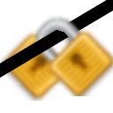
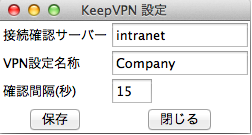

KeepVPN マニュアル
起動

KeepVPN をダブルクリックすると、起動します。設定ファイルが存在している場合、画面はでません。
設定ファイルが存在しない場合、あるいは、既に起動している状態でアイコンをダブルクリックした場合、設定画面が表示されます。
設定画面

設定項目は３つです。VPNの設定は、あらかじめシステム環境設定から行っておきます。
- 接続確認サーバー
- VPNが繋がっているかどうかを判断するためのサーバーを指定します。ここで指定したサーバーに接続できない場合、VPNを接続するための処理を行います。VPN経由でないとアクセスできないサーバーを指定します。
- VPN設定名称
- "ネットワーク環境設定"で作成したVPN接続のサービス名称を指定します。サービス名称は半角英数字で付けておきましょう。
- 確認間隔(秒)
- ネットワークの状態が変化すると接続確認サーバーにアクセスできるか確認しますが、その他に、定期的に接続できるかも確認します。その間隔を、ここで設定します。
設定ファイル
設定画面で設定した内容は、~/.keepvpn に保存されます。Windowsのiniファイル形式ですので、直接編集することも可能です。
設定ファイルが読み込まれるのは、起動時のみです。
停止方法
ありません。ターミナルから、keepvpn.shおよびkeepvpn.plをkillしてください。